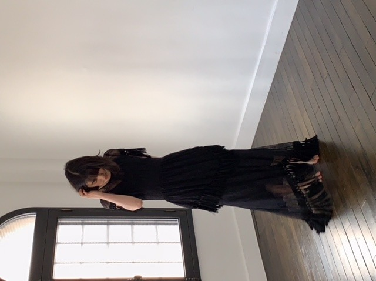

2018/1125Sunらしさ。
こんばんは
B.L.T.発売中です
みてくださいましたかー？




冬の海風の冷たさが心地よく
天気に恵まれた撮影でした
昔から、堤防や防波堤が好き！
楽しかったな〜
感想お待ちしてます☺︎
質問返しpart1
今度プリン会でどこか行くとしたら
行きたい国、または行きたい場所ってどこ？
→海外旅行行きたいねとはずっと話してます！
まったり温泉も良き
遊園地も行きたい
最近ハマってることはなんですか？
→温泉が好きなので色んな温泉地を
調べることかな
好きな男性の服装は？
→シンプル！全身黒で無地。みたいな
派手すぎない格好がいいです
男性は黒髪が好きですか？
みおなさんが染めたのを聞いて
少し染めてみたいなーって思いました！
→黒髪が一番だけど茶髪もいいと思います
似合ってれば結局なんでも良き
未央奈の描くアイドルの理想は？
→わが道をゆくポジティブな人
ももんがは好きですか？
→まだちょっと怖いです
何かキュンキュンできる
オススメの映画はありませんか？
→来年公開のホットギミックっていう映画が
おススメです♪
どうやったら強い大人になれますか？
→近くにいる大人の背中をちゃんと見て
自らいろんな経験をすることかな！
ニコルとプティの近況を!!
→お揃いの洋服着てるよ最近。笑
あと、おせち予約しましたー
とことん甘やかしてます 親バカです
今超やりたいことは？
→失恋ショコラティエや
イニシエーション・ラブみたいな小悪魔女子を
演じてみたいな
さつまいも料理の中で何が好きですか？
→ふかしいも
休みの日は家にいる方ですか？外に出る方ですか？
→アウトドアだったけど最近は一日中寝てたり
ドラマや映画を観たりすることが多いかな
未央奈はルーティーンとかはあるの？
→愛犬に朝と夜、必ずおはようとおやすみの
チューをします♡
1番テンションが上がる晩御飯のメニューは何ですか？
→すきやき
アイドルになっていなかったら何をしていましたか？
→子供が大好きなので保育士かな
では！
コメント(413)
オフショットも本当に素晴らしいです♡
B.L.T.のインタビューは感慨深いですよ！
でも困難な事ほどやりがいも有りますね☆
マロンちゃん達にはとっても癒されました！
掘未央奈ちゃんねるにも癒されましたよー♪
そして今夜も、ほーりーナイトやね～☺
安定の可愛さ！
3月の名古屋の全握絶対行くので楽しにしてます！
堀ちゃんのジコチューの時のウィンクの破壊力まじ半端ないって！！
絶賛テスト中だけど堀ちゃんのウィンクであと4時間は頑張れます！
いつも本当にありがとう！！！
土曜日の上海もがんばってください。
ホーリーとお猿さんとの戯れ、可愛かった！
みおたんの嬉しそうな顔、生き生きしてた！
赤ちゃんは可愛いね！
日テレ系音楽の祭典のみおたんのアウター、
すげーいいデザインだった！
あの中で一番目立ってた！
ウィンク、安定の可愛さ！
ジコチュウはいつも楽しみのウィンク！
ar、みおたんもずーみんも相変わらず可愛かった！
三枚おろし上手に完成したね！
美味しそう！
女子力上がったね！
おもてなし達人への坂道！笑
しらたきナポリタンはヘルシーだから、作ろ！
女子旅ゴルフに我が鹿島南蓼科ゴルフコースが出てるとは、
びっくり！
それでは健康第一で！
信州のミッキイでした！
NOGIBINGO見ました。フサオマキザルもボリビアリスザルもカワウソザルも、とってもかわいかったです。撮ってた写真もかわいかったので、Wikipediaのサルの自撮りに掲載される日も近いと思います。ただ、堀さんがサルの格好になるのをガマンできないという事実は少し心配です。日常生活に支障など無いといいのですが。
あと、「サル顔が好きなの？」を先回りして勝手にフルの凄く面白いですね。勝手にフルのをシリーズ化して欲しいくらいです。
以前755のエクソシストの話で、ブリッジで走るのは珍しいから怖いって言ってましたけど、一番最初に二足歩行になったサルって周りにドン引きされたのでしょうか。親ザルにみっともないからやめなさいなんて言われたのかもしれませんね。
ベストアーティスト最高でした！！
お下がり服の選択がオシャレ番長だったし、
コーデのセンスが本当に格好良かったです♡
とっても惚れ直していたところに、、
ウィンクからのプク顔でやられましたよぉ♡
ゆかちゃんのダンスも格好良かったし、
ゆかみなの写真にもほっこりしましたよん☆
レコメン！とっても新鮮で面白かったです！
番組はいつもより清潔感がありましたね♪笑
ひょっこりみおなで、、
一足早いクリスマスも味わえましたよ～☺
『B.L.T.』読みました。
まず、今回、「乃木坂新世代」と題された、3期生の選抜メンバー6人の表紙と巻頭特集に続いて、未央奈さんの特集頁があることが嬉しいです。
特に深い意味はなく、偶々そこに組み込まれだけかもしれませんが、誌面構成上からも、未央奈さんのことを励ましているように思いました。
衣装について。
「Like a swan」のタイトルに関連して、白と黒の衣装は、それぞれ、白鳥と黒鳥のイメージでしょうか。
特に白い衣装、半分は無地のサテンでしょうが、もう半分は羽毛を意識をしたのか、面白いデザインですね。撮影のとき、本物の羽毛のように、少しずつ抜け落ちていきませんでしたか？
写真について。
２頁目の顔がアップになっている写真。指を絡めたポージングも相まって、繊細に見えます。未央奈さんは個性的ですよね。目次も同じような顔のアップですけど、こちらは、より柔和な感じがします。微妙だけど確実に違う表情がいいです。
あと、太陽を腕に乗っけたような逆光の写真もいいです。シルエットの未央奈さんも美しい。
インタビュー。
いろいろ喋ってくれて、ありがとう。755でつぶやかれた言葉と抱き合わせて読むと、なるほどと思うことが多いです。
・自分と向き合うこと、孤独が必要なこと、同意します。ただ、未央奈さんの覚悟は素晴らしい。私などは孤独から逃げてばかりで、未央奈さんが眩しいです。
・悔しさは向上心の現れ。何事もポジティブに。日々前進ですよね。
・演技の話、『ザンビ』の現場で学んだこと、『ホットギミック』で過ごした濃密な時間、ちなみに『ホットギミック』撮影中、ブログ、モバメ、755が滞りがちだったのは、この濃密さのためだったと理解しています。カメラのない場所でも意識がアイドルに戻らないから書けなかったのでは、と想像しています。また、山戸監督と、いい出会いが出来たのですね。興味のある話です。完成した作品を観るのが楽しみです。
・乃木坂46のこと、確かに来年は大きな変化が訪れそうですね。未央奈さんはじめ、2期生も今以上に活躍の場を広げて、乃木坂の支えになれるといいと思います。1期生、３期生、新しくはいってくる４期生も含めて、乃木坂全体が盛り上がるといいですね。
もう今年の総括と新年の抱負をきかれる時期になったのですね。乃木坂、演技のお仕事、未央奈さんが楽しんでできますように、充実した活動ができますように見守っています。
モバメありがとう。いつも癒されています。
上海ライブでベストパフォーマンスが出来るように、東京から応援します。あ～行きたかったなぁ
ベストアーティスト、とっても可愛いかったし素敵でした。
乃木坂46と頑張ってるcuteでsmartな未央奈ちゃんを応援しています。
いっぱい写真載ってるブログもいいですね笑
僕の質問も返してもらえると嬉しいです！！！
お仕事頑張ってくださーい！！
前回はブログの感想と、ふと思った事を書きました！
時間→「No.337 2018年11月27日 01:15」
「ベストアーティスト」お疲れ様でした！
今回は両親からのおさがりコーデでの楽曲披露でしたね！普段は観られないおさがりコーデもオシャレに着こなされていたし、凄く可愛くてこんな彼女とデートしたいな～と思いました！まあ、素材が良いと何でも可愛くなりますね！久々に「ジコチューで行こう！」のウインクを観られて嬉しかったですし、これからも続けて欲しいです！
「NOGIBINGO!10」観ました！
オウム返しするわさびくんに笑わされました！フラれたイジリーさん、ちょっと可哀想・・・いちいち(良い意味で)リアクションが可愛くて色んな動物に癒されている未央奈ちゃんを観て癒されました！久し振りにホーリー観れて凄く嬉しかったし、やっぱりホーリーが1番好き！「堀未央奈ちゃんねる」のそろりそろりゲーム凄く面白かったです！僕も出来ませんでした！
「B.L.T.」見ました！
タイトルを見てグラビアの衣装は白鳥と黒鳥をモチーフにされたんだと思いました！
インタビューを読んで孤独は必要だという事、自分に甘やかさず厳しく向き合う事の大切さ、プレッシャーや悔しさをネガティブにとらえず原動力にして頑張る事を学ばせて頂きました！
演技について、「ザンビ」の撮影で学んだ事を「ホットギミック」で活かし、乃木坂人生より濃密な1ヶ月を過ごされて、達成感も味わい、知らない自分がどんどん出てきて、この1年で凄く成長されたんですね！感心しますし、凄く嬉しいです！これからも新たな未央奈ちゃんが見られるのを楽しみにしています！
今年はメンバーが沢山卒業されるという事で、来年は乃木坂にとって大事な1年になると思いますが、空高く羽ばたく白鳥のような大活躍を期待しています！
それでは上海ライブ頑張ってね！
写真昨日の衣装や～(癒) 僕も好き！大好き！
あと、僕も今日やっと22歳になりました！
この1年もしっかり応援させて頂きます！
ここまで読んで頂きありがとうございました！
毎日お仕事お疲れ様です！体調にはくれぐれも気を付けて頑張ってくださいね！
ではでは！
やっぱり海は良いね〜
気持ちもリフレッシュ出来る
最近日が暮れるのが早く、何となく
淋しい感じになるよ
もう今年も残り1ヶ月だねー！
早いものだね
やり残してる事あるかな？
乃木ビンゴの堀ちゃんのお猿さんの
着ぐるみ最高だったね
また、見てみたいよ
えっ
内容が違う？
まぁ〜まぁ〜
元気そうでなによりです。
尖り
期待してますね。
Ｂ．Ｌ．Ｔ観ました。
グラビアが、素晴らしくいいです。
さらに未央奈さんの大人な雰囲気がとても良く表現されてると
思います。 いい仕事です。
インタビュ－も、久しく読み応えがありました。
アイドル、芸能活動、特にやはり演技に対する文章の部分では、
予想以上の意識の高さを感じました。
これは、正しいと思います。
来年以降も、未央奈さんに、期待です。
写真とても綺麗です
質問返しありがとうございます
マスクマンです❗️(笑)
モバメ、ありがとね❗️(笑)
みおな、ゆうべのあのスタイル＋海原ウインクは、かなり反則❗️(笑)
で、ダメ押しのプク顔・・・(笑)
あれ見た瞬間、終了のゴングが・・・(笑)
写メもありがとね❗️❗️❗️
みおな、上海メンバーなんだね・・・
楽しむことね❗️❗️❗️(笑)
これだけ心掛けてもらえれば、みおなは大丈夫だから・・・
みおなは、気持ちだから・・・
とにかく、本番前から楽しく、そしてテンションを上げて入ってもらえれば・・・
それにしても、みおなと海外遠征、って聞いて思い出すのは、台北でのランウェイ・・・
ほら、七瀬と、まっつんと３人で行ったよね❗️(笑)
着いた空港の名前が、松山空港・・・
え❓️愛媛❓️
違うか❗️(笑)
でも、もうあれから２年か・・・
月日の経つのは早いね・・・
あの頃は、体調も崩しぎみだったけど、最近は体質も強くなったのかな・・・
その辺は、ちょっと安心してる・・・
向こうに着いて、こっちより寒かった、なんてことがあったら大変だから、コートなり、しっかり持って行ってね❗️(笑)
あとは、マスクも必需品だからね・・・
明日、出発かな・・・
お土産ばなし、楽しみにしてます❗️(笑)
それじゃ、またね❗️❗️(笑)
気をつけて・・・
上海ライブ頑張ってね！
も、モバメ来なくても
寂しくないんだからっ
うそ！(^o^)/
毎度毎度お疲れ様でございまし！！！
やはり、みおなさまはですね、かわいいのじゃ
最近はよくテレビに出てきてくれて嬉しいよ(;Д;)(;Д;)
でも、その分疲れが溜まると考えると体調がやはり気になる！そう！そうゆう未央奈には！ユンケル！イチローさんのパワーをしっかりもらってこれからも頑張りましょう。
せいや！この名前覚えとき(￣▽￣)
(ちゃか道でもいいよ(￣▽￣))
前回は「ベストアーティスト」と「NOGIBINGO!10」と「B.L.T.」とモバメの感想を書きました！
時間→「No.373 2018年11月29日 16:16」
まさか未央奈ちゃんからお誕生日おめでとうのメールが来るなんて思わなくて、正直めっちゃ嬉しかったです！昨日は「レコメン！」を聴き今日は朝方まで起きてたので、日付が変わって最初に嵐から、次に両親から、次に同僚から、最後に未央奈ちゃんからお祝いのメッセージを頂きました！
嵐からはJFC会員だけが誕生日限定で観られる動画とメッセージカード(QRコードで観られる動画付き)のサービスがあって、未央奈ちゃんからは「お誕生日おめでとう」と言って頂いて今までで1番嬉しい誕生日になりました！
※ここまでの「昨日」は11月28日です！
※ここまでの「今日」は11月29日です！
このコメント書いてたら誕生日終わった～(笑)
なんか早かったな～・・・半日寝とったし(笑)
〇モバメの内容について
・素敵な一年になりますように
→ありがとうございます！
その言葉、そのままお返しさせて頂きます！
・これからも私のそばにおって下さい 大好き
→ありがとうございます！
これからもあなたの成長をそばで見守らせて
頂きます！僕も大好きです！超嬉しいです！
いやぁ、本当にありがとうございました！
ここまで読んで頂きありがとうございました！
毎日お仕事お疲れ様です！体調にはくれぐれも気を付けて頑張ってくださいね！
おやすみおな～！
ブログありがとう❗️
全身黒で無地のコーデをした男性が
握手会で増えそうだよね❗️
あと白ニットとグレーのパーカーね❗️笑
ゆうたんより
ＢＬＴという雑誌は図書館にはないので
arという雑誌が図書館にあれば閲覧してみます。
乃木坂では西野さんや白石さんもモデルを
しているそうですね。
最近、３時間の音楽番組を見ました。
乃木坂のメンバーが私服で歌ってました。
私服の堀さんや西野さんや与田さんなどを見れて
至福の瞬間です＾＾
ではまたコメントしますね☆
髪キレイ！
今日上海ライブ楽しんできてね
記者会見の様子可愛いかったね
シブヤノオト見るね(o^^o)
斉藤貴巳
いま仕事が終わって、車の中で
帰り道は遠回りをしたくなるを
聞いています❤️
あっ、
車を止めて、
今日は上海だね❤️
またまた遠い所に行ったねぇ❤️
わたしは行った事が無いので
羨ましいです。
てかてか、
日本は寒いですよ❤️
そっちも寒そうかなぁ〜
てか、
もう始まりますよね❤️
間に合わないけど……
行きますね❤️
はい❤️
どんどん❤️
いけぇーーー❤️
世界一の坂道だーーー❤️
そびえ立つからこそ❤️
DON‼️
力強い一歩を魅せつけてこーい❤️
ね❤️
ね❤️
ファイティン♫♬
無理に考えても仕方がないよね❤️
はい❤️
相変わらずのわたしで
ごめんなさい❤️
わたしは……
いつも通りです❤️
みんなも……
いつも通りです❤️
そう、
いつも通りだよ❤️
ね❤️
（＾_＾）Ｖ
☆☆☆☆☆☆☆☆☆☆☆☆☆☆
。
僕は携帯電話やスマートフォンを持ってないので
パソコンから書き込んでいます。
新聞を見たらシブヤノオトという番組に
「西野七瀬」と書いてあったので乃木坂が出るのだと
思いました。
録画してるのでこの後ゆっくり見ます。
あと昨日の午後１０時ごろの新聞のテレビ欄に
「白石麻衣」と書いてあったので、
それも録画してます。
堀さんは、おとなしくて控えめな感じなので
好感が持てます。
堀さんが近所に住んでいれば友達に
なりたいタイプです＾＾
昨日の午後７時ごろから「炎の体育会ＴＶ」という
番組で陸上の短距離走がしてました。
堀さんは見ましたか？
僕は中学生の時の１００メートル走のタイムは
１３秒００です。
あ・・・質問です。
堀さんは陸上の１００メートル走のタイムは
どれくらいですか？
ではまたコメントしますね☆


今回もほりさん凄く綺麗でうっとりでした☆
切実に2nd写真集を待望しています！！